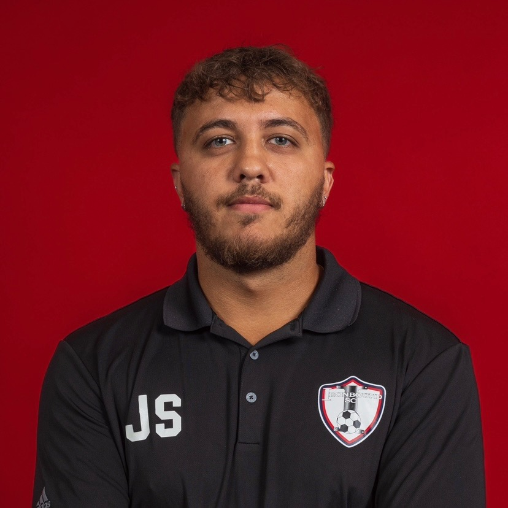
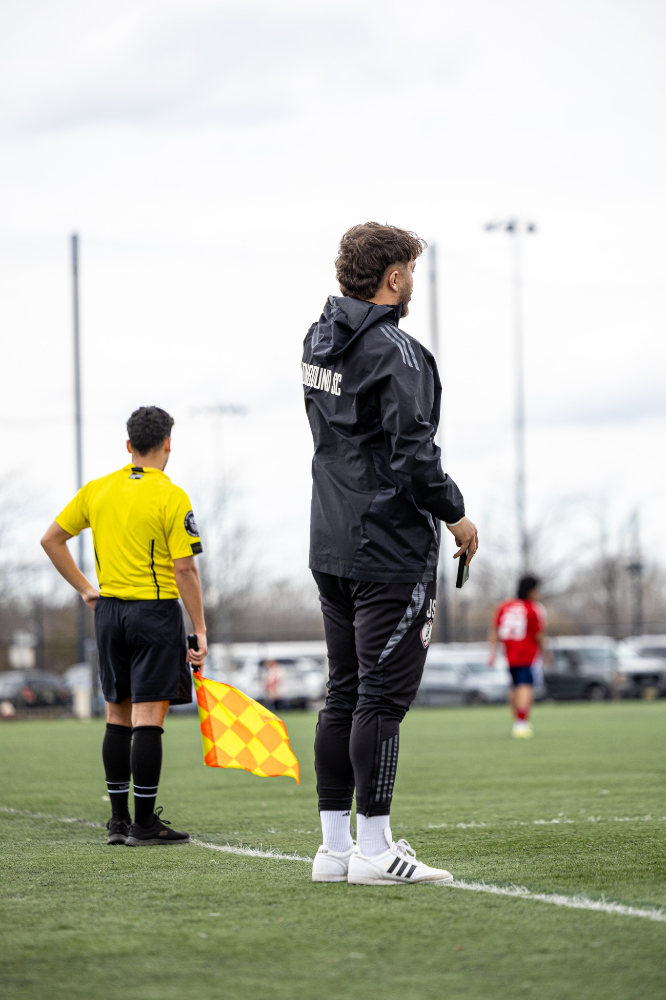
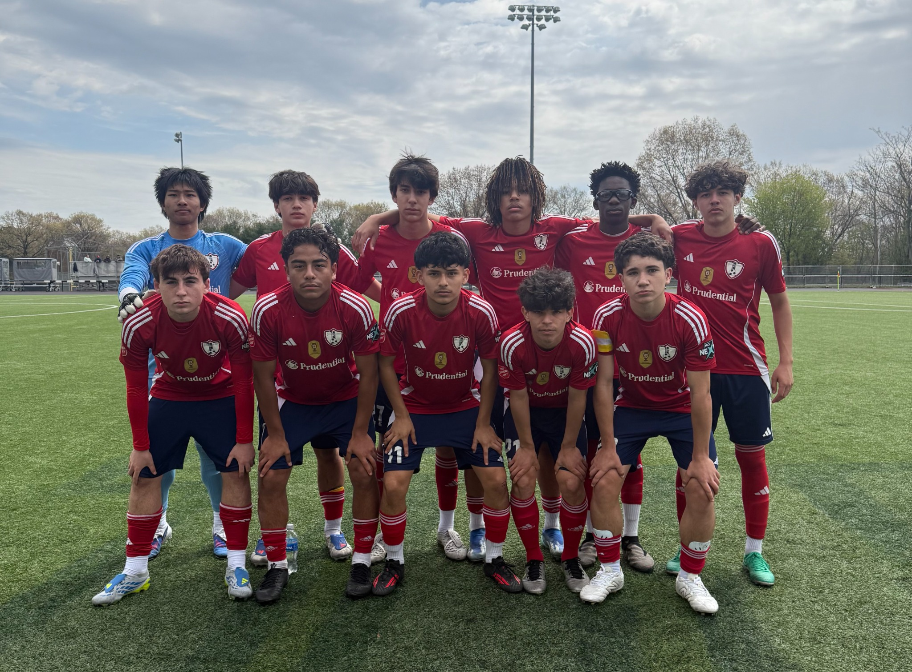
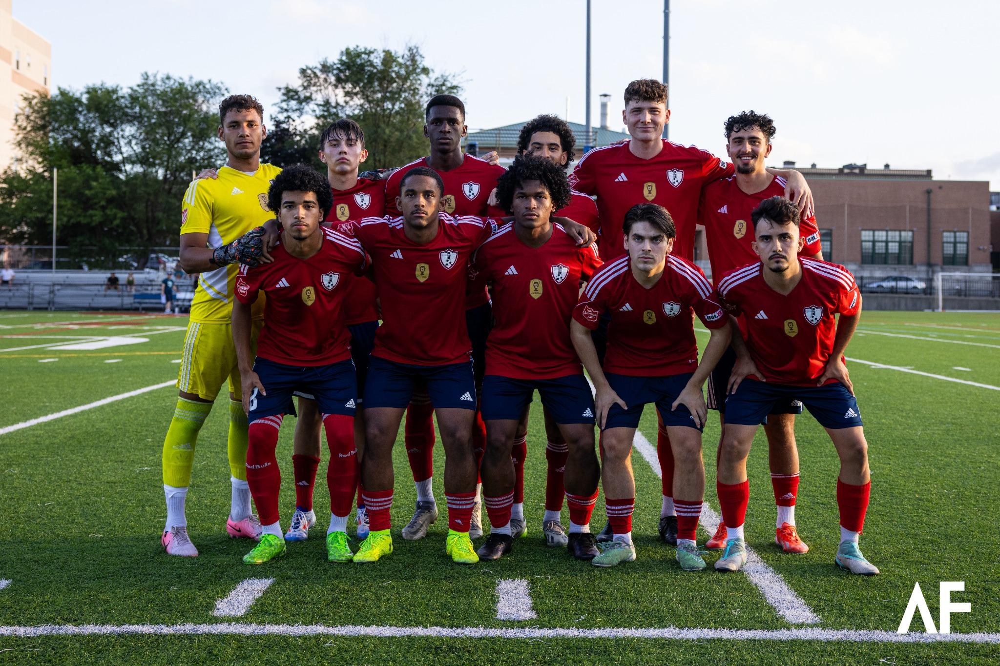
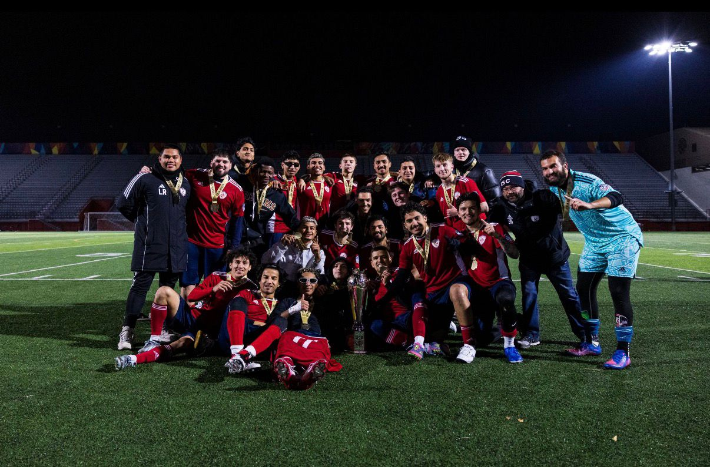

Player Opportunity
Helping players identify realistic college, showcase, and professional pathway opportunities that match their level, goals, academics, and finances.
I am developing as a Head of College Pathway & Player Recruitment focused on helping pre-professional athletes turn potential into opportunity through education, exposure, communication, and realistic guidance.

This portfolio presents the professional identity I am building: a pathway and recruitment leader who connects academy players, families, club staff, college coaches, and future opportunities through a clear system.
Helping players identify realistic college, showcase, and professional pathway opportunities that match their level, goals, academics, and finances.
Creating parent and player education systems so families understand timelines, communication standards, scholarships, school fit, and expectations.
Building relationships with college programs so players have more chances to be seen, evaluated, and connected to the right environments.

My current work combines academy coaching, player development, recruitment planning, and analysis. The long-term goal is to build this work at a larger platform such as MLS, Europe, or an academy director-level environment.
The work is designed as a full pathway model: player data, recruitment tools, coach relationships, event execution, player education, parent education, and post-grad connection.
Player information, academic data, video links, strengths, coach notes, and target school lists.
Showcase planning, event outreach, college coach communication, and player visibility.
College Night, workshops, parent intake, communication standards, and right-fit guidance.
Commitment promotion, alumni connection, UPSL/USL2 pathways, mentorship, and return opportunities.


